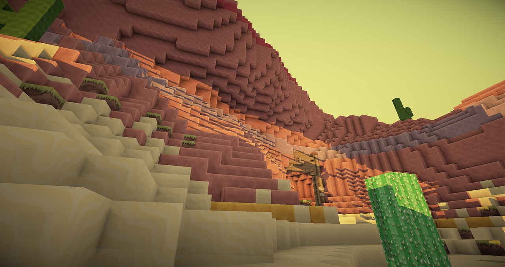
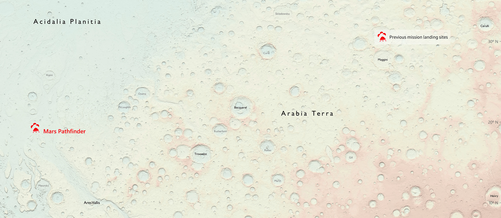
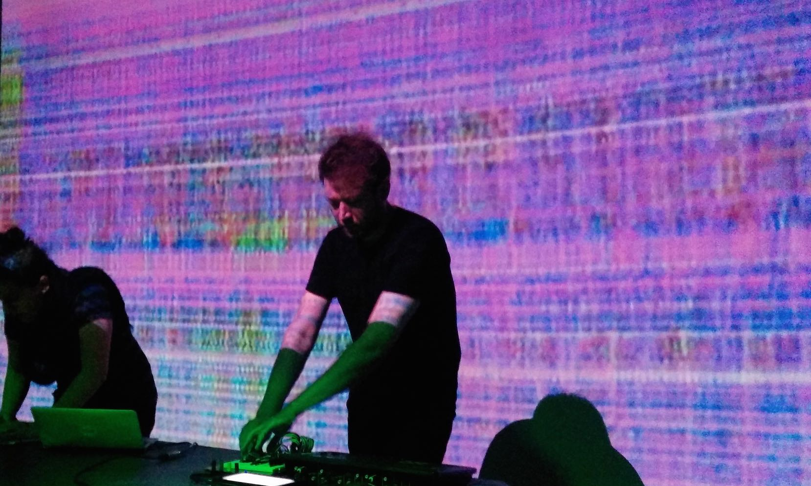

Seven weird ways that data is used
Data doesn’t have to mean dry numbers, statistics and spreadsheets. When it’s opened or shared, it can be mashed up, presented and interpreted in a huge range of weird and wonderful ways
 Minecraft players are using open data to create virtual worlds. CC BY 1.0, uploaded by [Pixabay](https://pixabay.com/en/minecraft-video-game-blocks-354458/ “Pixabay").
From creating music to mapping Mars, the more that data is shared, the more creative we are getting at turning it into something – transforming data that might have been intended for one thing into something completely different.
Here are some examples of some weird ways data has been used and interpreted.
1. Creating virtual worlds with real data
Environment Agency data being used by Minecraft players. CC BY 1.0, uploaded by [Open Data Institute](https://www.flickr.com/photos/ukodi/26933655085/ “Open Data Institute").
For the last 17 years the Environment Agency has used lasers to map and scan the English landscape from above to support flood modelling and efforts to track changing coastal habitats. As part of its commitment to go open, and release all of its commercial datasets by 2018, in September last year the agency made its LIDAR (Light Detection and Ranging) dataset open.
Since opening this data, some interesting uses have emerged, from vineyard planning to plotting archaeological sites. But perhaps the most unusual use is by players of Minecraft, a game in which users dig and build different kinds of 3D blocks within a large world of varying terrains and habitats. Players of this game have requested the LIDAR data to help them build realistic virtual worlds.
The national mapping authority Ordnance Survey has also used its own open data products to build a virtual version of Great Britain for Minecraft.
2. Turning bad news into free crisps
A crisp machine, that was temporarily on display at the Big Bang Data exhibition in London's Somerset House, continually scans the BBC News RSS feed and releases packets of crisps when words related to the recession make the headlines.
The art piece, which is now back at its original home at the ODI, even has its own Twitter account, declaring the flavour of crisps dispensed and the news story it relates to.
The artist, Ellie Harrison, says: “Whilst seemingly an act of generosity – gifting free food at moments when further doom and gloom is reported – the Vending Machine also hints towards a time in the future when our access to food may literally be determined by wider political or environmental events.”
3. Cooking up data-inspired meals
“Spiced foreigners between pasta” by Symeon Delikaris-Manias
Data Cuisine runs workshops throughout Europe that explore food as a means of data expression, or 'edible diagrams'.
Data-driven dishes include a lasagne that represents Finland’s ethnic mix, a fish dish that represents the emigration of young people from Spain and a pizza that represents renewable energy consumed in Switzerland. The Data Cuisine workshop is lead by Dr Susanne Jaschko and Moritz Stefaner.
4. Mapping the surface of Mars

Ordnance Survey map of Mars, Ordnance Survey (CC BY-NC 2.0)
The one-off Ordnance Survey (OS) Mars map, created using NASA open data and made to a 1:4,000,000 scale, has been made to see whether the OS style of mapping has potential for future Mars missions.
OS Cartographic Designer, Chris Wesson, in a recent blog, said: “We have set out from the start to treat the Mars data no different to how we would OS GB data or any other Earth-based geographic information or landscape.
"Mars is a very different topography to the Earth to map. The surface is very bumpy but at such a large scale I had vast expanses of land that appeared flat relative to the craters each of several thousands of metres depth.”
5. Making music with climate change
The sound of climate change from the Amazon to the Arctic from Ensia on Vimeo.
Music is being used to highlight the places where climate is changing most rapidly using surface temperature analysis from NASA’s Goddard Institute for Space Studies.
The composition called 'Planetary Bands, Warming World' uses music to represent over a century’s worth of weather data collected across the northern half of the planet. The pitch of each note is tuned to the average annual temperature in each region – low notes for cold years and high notes for warm years.
Co-creator Scott St George, in an article on ensia.com, says: “We often think of the sciences and the arts as completely separate – almost like opposites. But using music to share these data is just as scientifically valid as plotting lines on a graph.”
6. Jewellery-making with air quality data
Touching Air neckpiece by Stephanie Posavec and Miriam Quick
Designer Stephanie Posavec and data researcher Miriam Quick collaborated in 2014 to create a range of wearable pieces like jewellery to represent air quality in Sheffield, UK.
The necklaces represent a week’s worth of data from sensors measuring large particulate (PM10) levels. Stephanie Posavec says: "Since particulate matter damages the heart and lungs, we felt a neckpiece was an appropriate way of communicating this data."
The pieces were commissioned by ODI Sheffield host organisation Better With Data, as part of its AirQuality+ project.
7. Dancing to live code

Club Fierce: Algorave, image by Antonio Roberts (CC BY-SA 2.0)
Are you tiring of the usual club nights? Do you feel that 'up and coming' house DJs have been and gone? Well, as with many of today's challenges, algorithms can help.
'Algoraves' are events where DJs create live music by writing code instead of mixing recorded music, and they happen around the world. They can include a range of styles and the first ever event was held in London as a warm-up for the SuperCollider Symposium 2012.
Sound Artist Alex McLean, who coined the phrase along with Nick Collins, is the forthcoming ODI Sound Artist in Residence for its Data as Culture Programme.
If you have ideas or experience in open data that you'd like to share, pitch us a blog or tweet us at @ODIHQ.